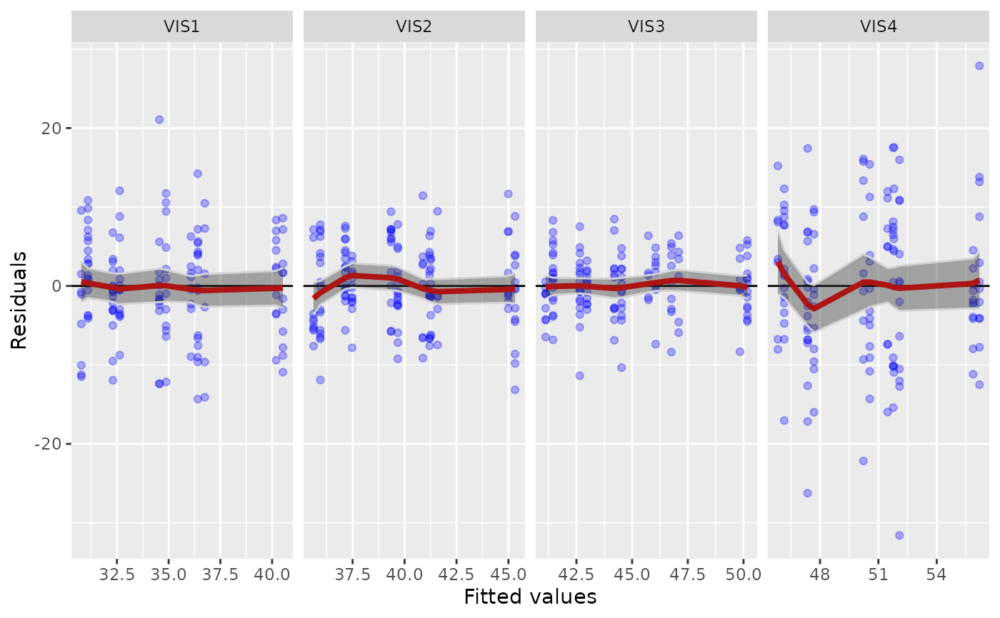

![[Stable]](figures/lifecycle-stable.svg)
This function produces diagnostic plots.
Usage
g_mmrm_diagnostic(
object,
type = c("fit-residual", "q-q-residual"),
z_threshold = NULL
)Arguments
- object
(
tern_mmrm)
model result produced byfit_mmrm().- type
(
string)
specifying the type of diagnostic plot to be produced:fit-residual: A fitted vs residuals plot, grouped by visits. This allows to see if there is remaining structure in the residuals that might be captured by adding additional covariates to the model.q-q-residual: A Q-Q plot for the residuals (i.e. sorted standardized residuals vs. normal quantiles), grouped by visits. Observations with an absolute standardized residual abovez_thresholdwill be labeled.
- z_threshold
(
numeric)
optional number indicating the normal quantile threshold for the Q-Q plot.
Details
Here we use marginal fitted values and residuals. That is, we estimate fitted values, and the difference of those fitted values vs. the observed data are the residuals.
See also
g_mmrm_lsmeans() for plotting the least-squares means and contrasts.
Examples
mmrm_results <- fit_mmrm(
vars = list(
response = "FEV1",
covariates = c("RACE", "SEX"),
id = "USUBJID",
arm = "ARMCD",
visit = "AVISIT"
),
data = mmrm_test_data,
cor_struct = "unstructured",
weights_emmeans = "equal"
)
g_mmrm_diagnostic(mmrm_results)

g_mmrm_diagnostic(mmrm_results, type = "q-q-residual")